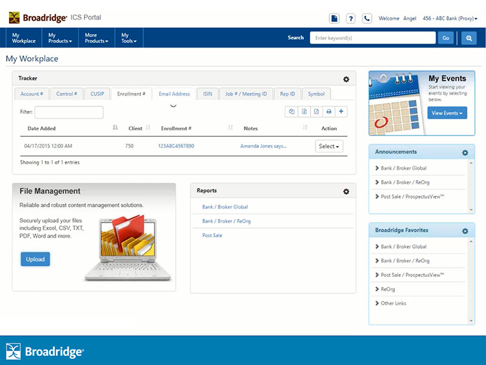

This is a high level overview of the design lifecycle after receiving a project request and processing the initial information provided. Each project has its own unique nuances and challenges, the following demonstrates a typical approach to UX design projects in my experience.

This outlines how design considerations and lifecycle were applied to one of the largest projects I worked on, Broadrige's ICS Portal. This project included several "Bank and Broker" applications, was a "first-of-its-kind" at Broadridge and took over 1 year to complete.
Create a single sign-on portal for several "Bank and Broker" applications which were designed and developed in silos which resulted in disparate designs, workflows, environments and more. A client (user) licensing several of these applications had to sign in to each application individually and would be restricted to viewing data from only 1 application at a time. We needed to offer users true "SSO" (single sign on) and allow them to view and leverage information, data and assets across all licensed applications.
Create a multi tenant portal that included all licensed applications with a consistent and modern UI/UX design, single sign-on functionality, security features, dashboard views with cross-application data views without having to redesign/redevelop each standalone application. Sounds easy right?
There were several initial concurrent efforts including portal software (ie., third party or write our own); select applications to include; review client feedback that supported the need to offer a portal solution; review standalone applications' design challenges; resource planning; cost estimating and other items that fell into the "sprint 0" phase.
As the UI/UX team lead, I was involved in every design related aspect of this project, including "sprint 0" items such as portal design inspirations, UX research and exploring third party portal software to understand what UI/UX features and functionality it offered.
To avoid redesigning/redeveloping entire standalone applications, the software engineers created APIs into parts of each standalone app to pull data and functionality in. This allowed us to design a consistent and moderan UI/UX for all applications in the portal, leveraging some existing styles and design patterns, but in many cases we created new styles and patterns.
This project was enormously challenging but we had a lot of fun with it and received great feedback from our clients.